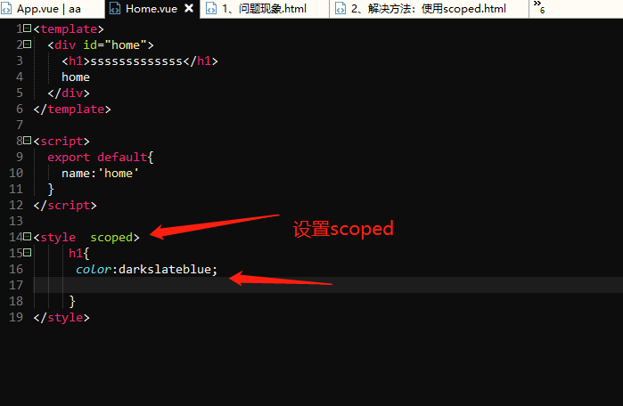
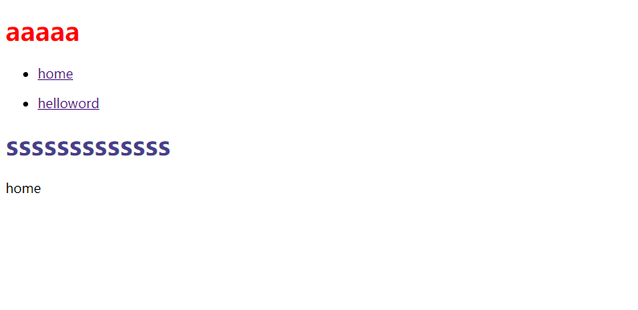

由于相同的选择器在一个页面中设置了样式所有元素都会生效，所以可以使用作用域的方式： 当前组件中的style标签中设置一个scoped,此时这个组件中的样式就只会在这个组件生效   这样的原理是vueJsf给每个元素设置了属性，而且在页面中的元素上生成了一个data-v-一些字符串属性，这时候页面上的css中设置的元素选择器就根据不同的data-属性生成样式并且与元素对应，从而生成自己元素的样式